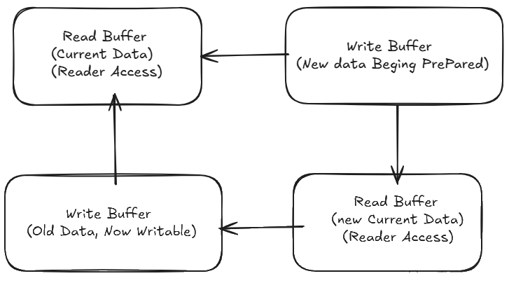

1. 引言：为什么我们需要双缓冲？
在现代软件开发中，尤其是在高并发、实时性要求极高的系统中，数据的读写分离是一个永恒的话题。最近在处理一个实时数据系统时，我遇到了数据库（MySQL）在高并发读写下的性能瓶颈。传统的加锁机制虽然能保证数据一致性，但却可能导致严重的性能下降，甚至阻塞整个系统。
在生产中构思解决方案时，我接触到了双缓冲（Double Buffer）这种巧妙的设计模式。它不仅仅局限于对实时数据要求高的系统，其核心思想——读写分离、异步更新——在任何需要高并发、低延迟读写的场景下都大有可为。
我惊喜地发现，这种模式与游戏引擎中逻辑线程（Logic Thread）和渲染线程（Render Thread）之间的数据同步需求不谋而合。游戏引擎中，逻辑线程负责计算物理、AI、动画状态等，而渲染线程则需要读取这些最新的状态来绘制画面。如果两者直接操作同一份数据并频繁加锁，必然导致渲染卡顿，影响用户体验。双缓冲机制恰好能优雅地解决这一痛点。
因此，我决定使用 C++ 来实现一个通用的双缓冲 DoubleBuffer 类，并深入探讨它在游戏引擎这类实时系统中的应用。
2. 双缓冲(Double Buffer)核心思想：一份读，一份写，一次翻转
双缓冲的核心理念非常直观：维护两份数据副本，一份用于读取（Read Buffer），一份用于写入/更新（Write Buffer）。
- 写操作：当需要更新数据时，所有写入操作都在写缓冲上进行。此时，读缓冲的数据保持不变，可以继续被读取线程访问，互不干扰。
- 读操作：所有读取操作都从读缓冲中获取数据。由于写操作不影响读缓冲，读取线程无需等待写操作完成，也无需加锁，从而保证了读取的实时性和高并发性。
- “翻转”（Flip）：当写缓冲的数据更新完毕，达到一个”完整且可用”的状态时，进行一次原子性的”翻转”操作。这个操作会将读缓冲和写缓冲的角色互换：原来的写缓冲变为新的读缓冲，供后续读取；原来的读缓冲（现在是旧数据）变为新的写缓冲，供后续写入。
这样说可能不太能理解其原理，于是我画了一个图帮助各位理解：

3. C++实现 DoubleBuffer 类：兼顾线程安全与易用性
基于上述核心思想，我们来设计一个通用的 C++ DoubleBuffer 类。为了更好地管理缓冲区的生命周期，我们选择 std::shared_ptr 来持有实际的 CACHE 对象，并利用 const 关键字来强制读取时的只读性。
3.1 代码展示
#include <memory> // For std::shared_ptr, std::make_shared
#include <mutex> // For std::mutex, std::lock_guard
#include <utility> // For std::forward
/**
* @brief 双缓冲模板类，实现读写分离。
* @tparam CACHE 实际存储数据的类型，例如 std::vector<int>, MyGameState 等。
*/
template <typename CACHE>
class DoubleBuffer {
public:
/**
* @brief 构造函数。
* 初始时，两个缓冲区都为空（nullptr）。
* 客户端必须先调用 set() 提供初始数据，get() 才能返回有效对象。
*/
DoubleBuffer() : _oddeven(0) {
// std::shared_ptr 默认构造为 nullptr，无需显式初始化
}
/**
* @brief 获取当前的读缓冲。
* @return 指向当前读缓冲的 const shared_ptr。
* 返回 const shared_ptr 保证了读取线程无法修改数据。
*/
std::shared_ptr<const CACHE> get() {
std::lock_guard<std::mutex> lock(_lock); // 保护 _oddeven 和 _caches 数组的访问
return _caches[_oddeven % 2];
}
/**
* @brief 设置新的写缓冲，并触发缓冲翻转。
* @param c 指向新数据的 shared_ptr。
* 调用者需要负责创建并填充这个新的 CACHE 对象。
*/
void set(std::shared_ptr<CACHE> c) {
std::lock_guard<std::mutex> lock(_lock); // 保护 _oddeven 和 _caches 数组的访问
_caches[(_oddeven + 1) % 2] = c; // 将新数据赋给"另一个"缓冲区
_oddeven++; // 翻转索引，使新数据成为读缓冲
}
/**
* @brief 辅助函数：方便地创建 CACHE 类型的 shared_ptr。
* 使用完美转发，支持 CACHE 类型的各种构造函数。
* @tparam ARGS 构造函数参数类型。
* @param args 构造函数参数。
* @return 新创建的 CACHE 对象的 shared_ptr。
*/
template <typename... ARGS>
static std::shared_ptr<CACHE> make(ARGS&&... args) {
return std::make_shared<CACHE>(std::forward<ARGS>(args)...);
}
private:
std::mutex _lock; // 保护缓冲区指针和索引的访问
unsigned int _oddeven; // 用于切换缓冲区的索引 (0 或 1)
std::shared_ptr<const CACHE> _caches[2]; // 存储两个缓冲区的 shared_ptr
// shared_ptr<const CACHE> 表示指向 const CACHE 的 shared_ptr
// 确保通过 get() 返回的数据是只读的
};3.2 关键点解析
template <typename CACHE>：使 DoubleBuffer 成为一个通用模板类，可以存储任何类型的数据（例如std::vector<int>、自定义的 GameState 结构体等）。std::shared_ptr<const CACHE> _caches[2]：std::shared_ptr：用于管理 CACHE 对象的生命周期。当所有 shared_ptr 都不再引用某个 CACHE 对象时，该对象会被自动销毁。这避免了手动内存管理和悬空指针问题。const CACHE：这是关键！_caches 数组存储的是指向 const CACHE 的 shared_ptr。这意味着通过 get() 方法返回的 shared_ptr 只能用于读取数据，而不能修改它。这强制了读写分离的原则，提高了线程安全性。_caches[2]：两个 shared_ptr，分别代表读缓冲和写缓冲。
std::mutex _lock和unsigned int _oddeven：_oddeven是一个简单的 unsigned int 计数器，通过_oddeven % 2和(_oddeven + 1) % 2来轮流访问 _caches 数组的两个元素。std::mutex _lock：用于保护翻转操作（即 set() 方法中对 _caches 数组的赋值和 _oddeven 的递增）以及 get() 方法中对 _oddeven 和 _caches 数组的读取。这确保了在多线程环境下，翻转操作是原子的，并且读线程总能获取到一个完整且一致的缓冲区指针。- 为什么 _oddeven 不需要 std::atomic？ 因为它始终在 _lock 的保护下被访问。std::mutex 已经提供了足够的同步保证。如果 _oddeven 不在互斥锁保护下被访问，那么才需要 std::atomic。
get()方法：加锁是为了确保在读取 _oddeven 和 _caches 数组时，不会与 set() 方法的翻转操作发生冲突。返回std::shared_ptr<const CACHE>明确表示了获取到的数据是只读的，任何尝试修改它的行为都会导致编译错误。set()方法：- 接收一个
std::shared_ptr<CACHE>，这意味着调用者需要在外部创建并填充好新的 CACHE 对象，然后将其传递给 set()。 _caches[(_oddeven + 1) % 2] = c;：将新数据赋值给当前未被读取线程使用的那个缓冲区。_oddeven++;：递增索引，使得下一次 get() 调用时，会返回刚刚更新的那个缓冲区。这个递增操作与赋值操作一起，在互斥锁的保护下，共同构成了原子性的”翻转”。
- 接收一个
make()静态方法：这是一个方便的辅助函数，用于创建 CACHE 类型的 shared_ptr。它使用了完美转发（ARGS&&... args和std::forward<ARGS>(args)...），这意味着你可以像调用std::make_shared一样，传入 CACHE 类型构造函数所需的任何参数。这使得创建新的缓冲区实例变得非常灵活。
3.3 优势与注意事项
优势：
- 极大地减少锁竞争：逻辑线程和渲染线程在绝大多数时间都是无锁并行执行的。只有在 set() 和 get() 内部的翻转操作时才需要短暂加锁，锁粒度极小。
- 提高并发性能：逻辑和渲染可以充分利用多核 CPU。
- 保证渲染流畅：渲染线程总能获取到一份完整且一致的数据快照，不会因为逻辑线程的更新而卡顿。
- 数据一致性：每次渲染都基于一个完整的帧状态，避免了读取到”半成品”数据。
注意事项：
- 内存开销：双缓冲需要两份 CACHE 对象的内存。如果 CACHE 对象非常大，这可能是一个需要考虑的问题。
- 数据延迟：渲染线程获取的数据总是”上一帧”或”上一个完整更新周期”的数据，而不是绝对实时的最新数据。对于大多数游戏而言，这种微小的延迟（通常小于一个帧周期）是完全可以接受的，并且是流畅渲染的必要代价。
- 初始状态：DoubleBuffer 初始时是空的，get() 会返回 nullptr。需要确保在第一次 get() 之前，至少调用一次 set() 来提供初始数据。
- 循环引用：如果 CACHE 对象内部也包含 shared_ptr，并且可能形成循环引用，需要注意使用
std::weak_ptr来打破循环，避免内存泄漏。
4. 总结与展望
双缓冲模式是一种强大而优雅的并发编程技术，它通过读写分离和原子翻转，有效地解决了多线程环境下数据一致性与性能之间的矛盾。我们的 C++ DoubleBuffer 实现利用 std::shared_ptr 管理生命周期，const 强制只读性，以及 std::mutex 保证翻转的原子性，提供了一个线程安全且易于使用的解决方案。
双缓冲模式还广泛应用于：
- 实时数据处理：后台线程处理数据，前端线程展示数据。
- 生产者-消费者模型：生产者将数据写入一个缓冲区，消费者从另一个缓冲区读取。
- 配置热加载：更新配置时，在后台准备新配置，完成后原子性切换，不影响正在运行的业务。